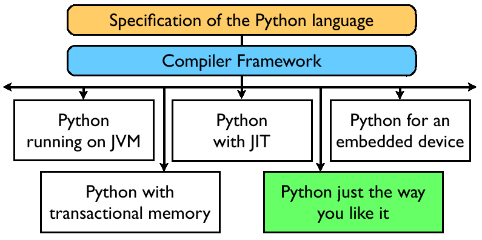
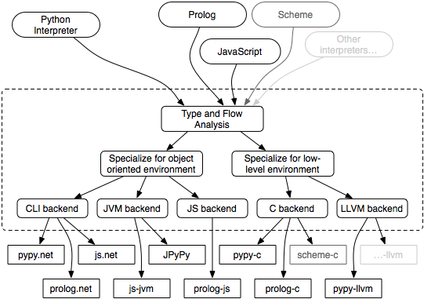
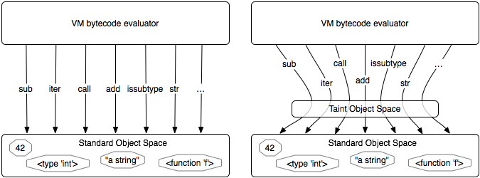

How PyPy could be useful for Zope
Authors:
Holger Krekel (merlinux GmbH) et al.
What is PyPy?
A compiler metaprogramming toolchain for dynamic languages
A flexible and fast Python Interpreter
An open source project (MIT License)
A (former) EU research project
-> PyPy-1.0 is a research result
Paradigm

PyPy Overview

Backends / Runtime integration
single source program translates to:
Main target: C/Posix
Main new target: .NET/CLI/CLR
Work in progress: JVM
Special target: Javascript for Web applications
CLR/CLI Backend
full python interpreter generated for .NET
support for CLR integration:
static RPython-level bindings
on top dynamic bindings using reflection (clr module)
More high-level backends
emerging JVM target:
translates complex RPython programs
no problems foreseen for full interpreter generation
Javascript target:
translates complex programs
Python Interpreter Prototypes
features are independent of backend
Security / Taint Space
Transparent Proxies:
Transparent Distribution
Orthogonal Persistence
Taint Space
control of information data flow:
label sensitive data
avoid sensitive information leaks
explicit primitive to declassify
easily implemented as an object space around the standard one securing all operations on objects
Taint Space diagram

interactive prompt demo
Transparent Proxies
proxy: intercept any operation on an builtin object
transparent: don't change object interface
useful for implementing application level functionality orthogonally to usage of objects
is the mechanism for distribution and persistence prototypes
see also .NET TransparentProxy
Transparent Distribution
transparent lazy access to remote objects
internally uses RPC-like protocol
remote objects are presented through transparent proxies
access to remote tracebacks, frames, etc. work as if local!
Orthogonal Persistence
persist Python objects "invisibly"
interpose interception of changes to objects
implement your own custom persistence scheme (e.g. using ZODB)
Threading in PyPy
principal choice of os-threading models (GIL, no, ...)
stackless
transform
/ micro-threads:
suspending/resuming computations
pickling/migration of computations
unlimited recursion
composable
greenlets, tasklets, co-routines
Relative speeds to CPython
CPython 2.4.4
pypy-llvm
richards
1.00
1.17
pystone
1.00
1.55
templess
1.00
5.41
gadfly
1.00
6.38
mako
1.00
7.65
(March 2007, improvements afterwards)
JIT Compiler Generator
generate JIT Compilers automatically!
JIT Compiler Generator
generate JIT Compilers automatically!
we began to apply it to the Python Interpreter (integer arithmetic)
approach more complete than Psyco
gets us in the range of C-speed ("gcc -O0")!
Python Interpreter Status (1.0)
compliant, 340 KLOC / 85 test KLOC
single source for all platforms
flexibel, fast, well-tested (11805 tests)
new middleware features
need more extension modules!
better GCs and more JITting will even improve speed!
Special RPython programs
webservers, web applications, algorithms
can be translated to many targets
can run up to 100 times faster compared to being interpreted through CPython
very fast startup times!
used for commercial purposes
RPython advantages over C
portable code
high level data structures
easy to test, quick to develop
translates to various targets, including CPython extension module
py lib release
py lib / py.test 0.9 release (Feb 2007):
project independent tool for automated testing
lightweight no-boilerplate approach
many development support features for PyPy
includes distributed testing (started as SOP project)
Summary (1)
with PyPy it is easy to:
implement advanced Python Interpreter features
write new backends / runtime targets
implement new (non-python) interpreters
PyPy's rough edges: it is a research result!
emerging as platform to implement dynamic languages
Summary (2)
advantages of PyPy's meta-programming approach:
separation of lang implementation aspects
integrates with today's mainstream platforms
single source eases maintenance
all interpreters benefit from advanced transformations
all code at high abstraction level!
Possible Zope applications
security + transparent proxies: persistence, distribution
experiment with RPython to implement
Page Template Engine?
AJAX/Javascript web applications?
speedy extension modules?
use for web hosting (fast startup times)?
synchronous instead of callback/event programming?
Future
caretaker/trusted contributors group (pypy-ct):
takes care for conceptual integrity
negotiates (sprint) funding
pending community process:
many directions and interests
consolidation phase?!
settle on rough roadmap
more sprints! (19 so far)